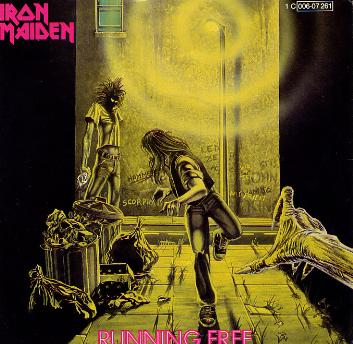

QUEM É EDDIE?
O Morto-vivo, Eddie aparece em todas as capas dos álbuns do Iron Maiden e já teve os mais diversos visuais ao longo dos anos. Considerado por muitos fãs um membro da banda, ele foi criado por Derek Riggs nos anos 70.
COMO SURGIU?
Inspirado no movimento punk, Eddie traz um rosto em decomposição devido à “juventude da época estava sendo desperdiçada e jogada no lixo”. O desenhista tentou encontrar uma banda que aceitasse adotar Eddie como seu mascote por quase um ano e meio, até o Maiden pedir para conhecê-lo. Claro, o grupo britânico aceitou e desde então o mascote estampou todos os trabalhos da banda. Eddie surgiu de uma ideia muito simples de um cenógrafo chamado Dave Beasly que gostava de usar sucata em seus trabalhos. A cenografia de Beasly recorria ao uso de aparelhos eletrodomésticos quebrados, partes da lataria de automóveis, chapas plásticas e metálicas, furadas e recortadas, lâmpadas, vidros etc. De início, Eddie ainda não tinha nome e era apenas uma cabeça gigante, monstruosa e metálica, montada num canto do palco de um dos primeiros shows dos Iron Maiden
PRIMEIRA APARIÇÃO
A primeira aparaição foi em 'Running Free', nessa versão seu rosto era enigmatico aparecendo no fundo de um beco Dois meses depois, a primeira aparição de fato veio no album auto entitulado como 'Iron Maiden'. Aqui ele abertamente mostra sua face Desde sempre Eddie aparece em todas as capas da banda, em inúmeras verões: Morto-vivo, queimado, versão futurísta, e etc..
De acordo com o vocalista Paul Di'Anno, que escreveu a letra da música, é "uma música muito autobiográfica, embora é claro que eu nunca tenha passado a noite em uma cadeia de Los Angeles. É sobre ter 16 anos e, como diz, apenas correr selvagem e correndo livremente... Escute a música a seguir cantanda pelo vocalista original